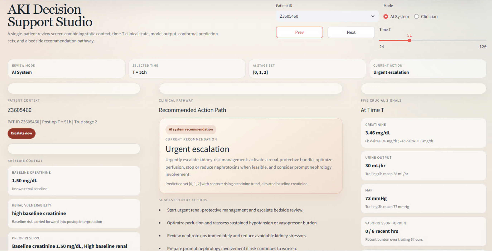

Reliable clinical AI
Designing clinical decision support systems that account for class imbalance, distribution drift, and deployment constraints instead of optimizing only for leaderboard metrics.
AI Researcher • Healthcare • Genomics • Scientific ML
I build reliable machine learning systems for high-stakes settings, from clinical decision support and single-cell genomics to uncertainty-aware sensing and physical sciences.
About
I’m a Machine Learning Researcher at Baylor College of Medicine and Rice University in Houston, where I work on trustworthy AI for clinical deployment. My work turns messy, heterogeneous data into systems that support decisions rather than just generate scores.
Across postdoctoral work at Johns Hopkins and Scripps, and earlier research at the University of Florida and Texas A&M, I’ve focused on a common question: how do we make machine learning reliable enough to matter in scientific and engineering practice?
Research Themes
Designing clinical decision support systems that account for class imbalance, distribution drift, and deployment constraints instead of optimizing only for leaderboard metrics.
Building AI-assisted workflows for domains like scRNA-seq where user control, reproducibility, and safe recommendation loops are just as important as automation.
Applying conformal prediction, robust sensing, and physics-aware modeling to acoustics, infrastructure monitoring, and physical simulation.
Highlighted Work
On longitudinal EHR data, I built uncertainty-aware AKI staging models that combine tabular foundation models with conformal prediction to support risk-aware clinical pathways.
human-in-the-loop design pattern for AI-assisted genomics analysis
Featured System
I built an AKI clinical decision support pipeline that combines heterogeneous EHR data including labs, medications, and vital signs to model continuous creatinine trajectories over time.
Those model outputs are translated into reliable prediction sets with conformal prediction, allowing uncertainty-aware reasoning rather than a single overconfident estimate. The prediction sets are then mapped into concrete clinical action pathways such as monitoring, escalation, and urgent intervention.
The full system is demonstrated through an interactive UI that brings together patient context, time-indexed model output, conformal stage sets, and recommended bedside actions in a single decision support view.

Journey
Machine Learning Researcher, Houston, Texas
Trustworthy clinical AI, longitudinal EHR modeling, conformal prediction, and agentic pipelines for scientific analysis.
Postdoctoral Researcher, Baltimore, Maryland
Graph neural networks and autoregressive systems for high-dimensional physical stress-field prediction.
Postdoctoral Researcher, San Diego, California
Robust ML for underwater direction-of-arrival estimation and uncertainty quantification with conformal prediction.
PhD, Electrical & Computer Engineering
Uncertainty-aware machine learning for structural health monitoring, physics-guided augmentation, and sim-to-real robustness.
Selected Publications
Journal of the Acoustical Society of America, 2024
Journal of the Acoustical Society of America, 2023
Frontiers in Materials, 2023
Journal of the Acoustical Society of America, 2022
ICASSP, 2023
Talks & Recognition
Presented work on uncertainty-aware machine learning for structural health monitoring at Sandia National Laboratories and Lawrence Livermore National Laboratory.
Spoke at Texas A&M University on infusing reliability into machine learning for high-stakes applications.
Awarded the Schmidt AI in Science Postdoctoral Fellowship to work on AI for large-scale infrastructure management.
Contact
If you’re working on reliable AI, clinical decision support, scientific machine learning, or human-in-the-loop analysis systems, I’d be glad to connect.